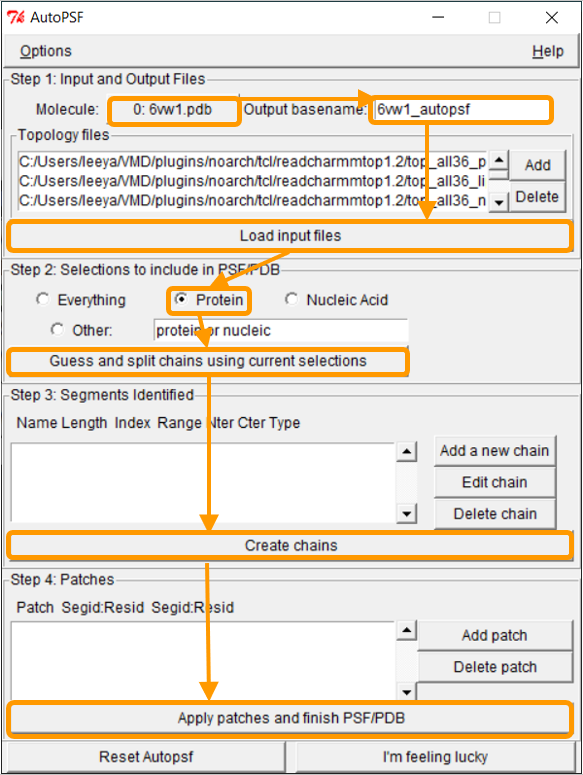
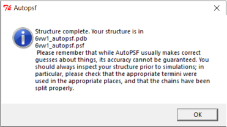

Software Tutorial: Computing the Energy Contributed by a Local Region of a Bound Complex
In this tutorial, we will show how to use NAMD Energy to calculate the interaction energy for a bound complex, as well as to determine how much a given region of this complex contributes to the overall potential energy. We will use the chimeric SARS-CoV-2 RBD-ACE2 complex (PDB entry: 6vw1) and compute the interaction energy contributed by the loop site that we identified as a region of structural difference in a previous lesson.
To determine the energy contributed by a region of a complex, we will need a “force field”, an energy function with a collection of parameters that determine the energy of a given structure based on the positional relationships between atoms. There are many different force fields depending on the specific type of system being studied (e.g. DNA, RNA, lipids, proteins). There are many different approaches for generating a force field; for example, Chemistry at Harvard Macromolecular Mechanics (CHARMM)1 offers a popular collection of force fields.
To get started, make sure to have installed VMD and know how to load molecules into the program; if you need a refresher, visit the VMD and Multiseq Tutorial. Then, download NAMD; you may be asked to provide the path to your NAMD installation.
Creating a protein structure file
NAMD needs to utilize the information in the force field to calculate the potential energy of a protein. To do this, it needs a protein structure file (PSF). A PSF, which is molecule-specific, contains all the information required to apply a force field to a molecular system.2 Fortunately, there are programs that can generate a PSF given a force field and a .pdb file containing a protein structure. See this NAMD tutorial for more information.
First, load 6vw1 into VMD. We then need to create a protein structure file of 6vw1 to simulate the molecule. We will be using the VMD plugin Atomatic PSF Builder to create the file. From VMD Main, click Extensions > Modeling > Automatic PSF Builder.

In the AutoPSF window, make sure that the selected molecule is 6vw1.pdb and that the output is 6vw1_autopsf. Click Load input files. In step 2, click Protein and then Guess and split chains using current selections. Then click Create chains and then Apply patches and finish PSF/PDB.

During this process, you may see an error message stating MOLECULE DESTROYED. If you see this message, click Reset Autopsf and repeat the above steps. The selected molecule will change, so make sure that the selected molecule is 6vw1.pdb when you start over. Failed molecules remain in VMD, so deleting the failed molecule from VMD Main is recommended before each new attempt.
If the PSF file is successfully created, then you will see a message stating Structure complete. The VMD Main window also will have an additional line.


Using NAMD Energy to compute the energy of the SARS-CoV-2 RBD loop region
Now that we have the PSF file, we can proceed to NAMD Energy. In VMD Main, click Extensions > Analysis > NAMD Energy. The NAMDEnergy window will pop up. First, change the molecule to be the PSF file that we created.

We now want to calculate the interaction energy between the RBD and ACE2. Recall that the corresponding chain pairs are chain A (ACE2)/chain E (RBD) and chain B (ACE2)/chain F (RBD). As we did in the previous tutorial, we will use the chain B/F pair. Put protein and chain B and protein and chain F for Selection 1 and Selection 2, respectively.
Next, we want to calculate the main protein-protein interaction energies, divided over electrostatic and van der Waals forces. Under Output File, enter your desired name for the results (e.g., SARS-2_RBD-ACE2_energies). Next, we need to give NAMDEnergy the parameter file par_all36_prot.prm. This file should be found at VMD > plugins > noarch > tcl > readcharmmpar1.3 > par_all36_prot.prm. Finally, click Run NAMDEnergy.

The output file will be created in your current working directory and can be opened with a simple text-editor. The values of your results may vary slightly upon repetitive calculations.

Note: You may be wondering why the interaction energy comes out to be a negative number. In physics, a negative value indicates an attractive force between two molecules, and a positive value indicates a repulsive force.
We will now focus on the interaction energy between the SARS-CoV-2 RBD loop site (residues 482 to 486) and ACE2. In the NAMDEnergy window, enter protein and chain B for Selection 1 and protein and chain F and (resid 482 to 486) for Selection 2. Keep all other settings the same. You should see output results similar to the following.

The above results seem to indicate that the interaction between SARS-CoV-2 RBD and ACE2 is a favorable interaction, and that the loop region contributes to this bonding. Yet our goal was to compare the total energy of the bound RBD-ACE2 complex in SARS-CoV-2 against that of SARS-CoV, as well as to compare the energy contributed by the three regions of structural difference that we identified in the main text. We will leave these comparisons to you as an exercise, and we will discuss the results in the main text.
STOP: First, compute the total energy of the SARS-CoV RBD complex with ACE2 (PDB entry: 2ajf). How does it compare against the energy of the SARS-CoV-2 complex? Then, compute the energy contributed by hotspot 31 and hotspot 353 in SARS-CoV-2, as well as that of the regions corresponding to these regions and the loop region in SARS-CoV. (Consult the table below as needed.) How do the energy contributions of corresponding regions compare? Is this surprising, and what can we conclude?
| Model | Region | Selection 1 | Selection 2 |
|---|---|---|---|
| SARS-CoV-2 (6vw1) | Total | protein and chain B | protein and chain F |
| SARS-CoV (2ajf) | Total | protein and chain B | protein and chain F |
| SARS-CoV-2 (6vw1) | Loop | protein and chain B | protein and chain F and (resid 482 to 486) |
| SARS-CoV (2ajf) | Loop | protein and chain B | protein and chain F and (resid 468 to 472) |
| SARS-CoV-2 (6vw1) | Hotspot31 | protein and chain B | protein and chain F and resid 455 |
| SARS-CoV-2 (6vw1) | Hotspot31 | protein and chain B and (resid31 or resid 35) | protein and chain F |
| SARS-CoV (2ajf) | Hotspot31 | protein and chain B | protein and chain F and resid 442 |
| SARS-CoV (2ajf) | Hotspot31 | protein and chain B and (resid 31 or resid 35) | protein and chain F |
| SARS-CoV-2 (6vw1) | Hotspot353 | protein and chain B | protein and chain F and resid 501 |
| SARS-CoV-2 (6vw1) | Hotspot353 | protein and chain B and (resid 38 or resid 353) | protein and chain F |
| SARS-CoV (2ajf) | Hotspot353 | protein and chain B | protein and chain F and resid 487 |
| SARS-CoV (2ajf) | Hotspot353 | protein and chain B and (resid 38 or resid 353) | protein and chain F |
Note: Chain B refers to ACE2 and Chain F refers to RBD